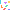

메테오 런
쏟아지는 운석을 피해 최대한 오래 버티는 회피 서바이벌. 별을 먹으면 점수가 오르고, 15초마다 레벨업 — 운석이 더 빨라집니다. 기록으로 친구와 겨뤄보세요.

테트리스
이전에 만든 고전 퍼즐 — 쌓고 지우기. 별도 사이트에서 플레이.
🔒
다음 게임
제작 중입니다 — 이 구역에 새 게임이 들어올 예정.
KIM MINGI PRESENTS
직접 만든 브라우저 게임을 모아두는 곳 · 플러그인 없이 바로 플레이
쏟아지는 운석을 피해 최대한 오래 버티는 회피 서바이벌. 별을 먹으면 점수가 오르고, 15초마다 레벨업 — 운석이 더 빨라집니다. 기록으로 친구와 겨뤄보세요.

이전에 만든 고전 퍼즐 — 쌓고 지우기. 별도 사이트에서 플레이.
제작 중입니다 — 이 구역에 새 게임이 들어올 예정.